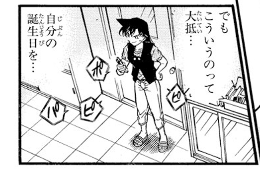

1.毛利兰的出生年份应该是1977年（蛇年）。“柯南元年”是1994年，确切来说是1994.1.12，如果用这个时间点减去16年（按每年365天估算），那就是1978.1.12，而73又说毛利兰的生日一直藏着没画，指的应该是17岁生日，所以再往前推365天，大概就到了1977.1.12。
按公历来说，1977年一整年就是蛇年，中国农历则是1977年的春节到1978年的春节是蛇年。但由于兰的生日铁定在红修篇之后，所以只有可能是1977年第四季度。
2.兰比志保小两岁，假设“哀兔论”成立的话，兰的属相自然就是蛇了。而新一属龙的话，在中国文化里，蛇又叫“小龙”，完美符合兰目前的“新一挂件”角色定位。而哀如果和4有关的话（兔在生肖排行4，志保的shi也谐音“4”），那么兰自然就和6有关。
3.假设“撒旦论”也是成立的话，那么《圣经》（旧约）的里记载，撒旦的化身就是“古蛇”。
而《名柯》连载时间即将到达第三个蛇年（之前的蛇年是2001年、2013年），也就是2025年，正好凑齐三个“6”，恰好也凑齐了三个国外篇章“纽约篇”、“伦敦篇”、“M23（新加坡）”，也就变成了“666”——撒旦的数字。
纽约篇提到了“金苹果”，“伦敦篇”提到了撒旦，启示录等宗教词汇。加上新一头上的“苹果把”，我推测也暗喻伊甸园的那一幕，即蛇（兰），用苹果（新一），来引诱读者。
4.兰（ラン）和朗姆（ラム）的读音比较相似，而朗姆的描述是“蛇一样的左眼”，再加上朗姆篇也快到结尾了，我倾向同样有“蛇”特征的俩人，会在明年有大动作。
最靠谱的推测就是兰的生日作为朗姆篇收尾，朗姆三嫌同框，柯南被朗姆扒掉马甲。
按公历来说，1977年一整年就是蛇年，中国农历则是1977年的春节到1978年的春节是蛇年。但由于兰的生日铁定在红修篇之后，所以只有可能是1977年第四季度。
2.兰比志保小两岁，假设“哀兔论”成立的话，兰的属相自然就是蛇了。而新一属龙的话，在中国文化里，蛇又叫“小龙”，完美符合兰目前的“新一挂件”角色定位。而哀如果和4有关的话（兔在生肖排行4，志保的shi也谐音“4”），那么兰自然就和6有关。
3.假设“撒旦论”也是成立的话，那么《圣经》（旧约）的里记载，撒旦的化身就是“古蛇”。
而《名柯》连载时间即将到达第三个蛇年（之前的蛇年是2001年、2013年），也就是2025年，正好凑齐三个“6”，恰好也凑齐了三个国外篇章“纽约篇”、“伦敦篇”、“M23（新加坡）”，也就变成了“666”——撒旦的数字。
纽约篇提到了“金苹果”，“伦敦篇”提到了撒旦，启示录等宗教词汇。加上新一头上的“苹果把”，我推测也暗喻伊甸园的那一幕，即蛇（兰），用苹果（新一），来引诱读者。
4.兰（ラン）和朗姆（ラム）的读音比较相似，而朗姆的描述是“蛇一样的左眼”，再加上朗姆篇也快到结尾了，我倾向同样有“蛇”特征的俩人，会在明年有大动作。
最靠谱的推测就是兰的生日作为朗姆篇收尾，朗姆三嫌同框，柯南被朗姆扒掉马甲。
插眼，成真了回来等着被刀吧lz
众所周知小哀18岁属兔，新一17岁，小兰16岁属蛇，好玩的是明年就是蛇年，结合青山在动物之森说的话，难道明年漫画会画兰神的生日？！
2024-07-01 18:41 | 暝色:握草！这个绝了2024-07-02 01:48 | 世界上没有真理:今年12月13是星期五，加上又出了蛋糕簽繪，不會年底就能看到生日劇情吧？2024-07-02 01:51 | EdwardClow:回复 世界上没有真理 :12月在日本Sunday是新年一号刊，所以12月13日更新的漫画应该也可以看做蛇年更新吧2024-07-02 06:36 | 我有嘉賓00:但愿如此2024-07-03 04:27 | EdwardClow:回复 世界上没有真理 :赤井秀一和宫野志保的假死都是现实中的黑色星期五，64楼我整理了具体的时间2024-07-04 06:54 | 虬空:回复 EdwardClow :我大受震撼2024-07-05 18:30 | 剑锋寒光:这世间竟有如此多的巧合，真是精妙绝伦
nb!2024-07-27 11:10 | 夜店第一瞪眼瞎:回复 世界上没有真理 :应该不会那么赶吧，好像今年还得画赤井务武不是，而且生日和假死也未必需要在一个案件里要成不是？ 瞎猜一下，25年画生日，26年11月13是黑色星期五假死，转过年来，m30宫野志保主役感觉也挺合理的。2024-08-19 23:16 | ºMeetº:回复 秀夫 :大阪大系列完结106卷正好可以发售，按照一年两卷进度及卷数论108卷发生朗姆篇高潮并进入boss篇，最快明年年底能看到吧友预测小兰生日朗姆篇大事件，盲猜今年年底107卷开始讲务武4话左右，明年2月长野组映射剧场版最好解决苏格兰事件5话，中途水点3话日常，明年后半年进入108卷朗姆完结篇
不好说，毛利兰的年龄确定是16岁吗？我记得青山说毛利兰跟新一同岁
2024-07-01 10:20 | 櫻井青城:百度能搜到一个“青山刚昌于2012年1月3日在鸟取县的采访中提到兰是16”，但我还没找到这个采访，不过百度百科的信息显示16（当然我知道这个可以改2024-07-01 14:00 | 贴吧用户_0bDS2EM:同岁；同一年出生；不等于同一天出生2024-07-02 10:29 | 沐雪霜蝶:回复 贴吧用户_0bDS2EM :同一年出生的话不就是同一属相了吗？2024-07-03 20:32 | 异维之拉º:回复 沐雪霜蝶 :中国属相是按照农历来的，年初在农历里还只是年末属于上一年的属相，等春节过了才会换属相，所以公历一年是有两个属相的2024-07-03 22:04 | 沐雪霜蝶:回复 异维之拉º :居然。。。我以为日本那边看属相就是直接按公历来的orz2024-07-12 19:35 | 银发控♂:回复 异维之拉º :但新一是五月四号😅不管农历还是新历都已经过去了一年，除非🦶是来年二月2024-07-14 23:21 | 史桩之玄枵:回复 异维之拉º :但日本那边是把农历和公历合一了，比如农历节日全部都按照公历日期过2024-08-19 23:18 | EdwardClow:的确是16岁啊
别的不说，犹大之吻太像了，标记了耶稣（工藤）
2024-07-02 10:38 | 顽皮鬼才:2024-07-27 09:44 | Rezedaizuki:找了找，草簡直一模一樣
这个早就猜到了，我原本是预估2025年上半年青山才会画小兰生日，原因是我猜青山不会跟剧场版抢热度，现在看来有点急，不过我还有一个猜想是漫画107卷才是小兰生日接工藤新一之死，因为107卷漫画扑克牌对应小王，小王又在日本叫做“鬼牌”，又可以对应一下小兰恶魔的身份又可以对应朗姆的扑克牌对应，然后108卷扑克牌对应大王，也是王牌joker的意思，所以江户川柯南会复活，而且乌丸的真实身份也会被揭开。
2024-07-01 11:13 | ☞坚硬如水☜:同意 108是第二个五十四 单行本封底人物是大鬼朗姆真身2024-07-01 11:32 | EdwardClow:我预测108卷朗姆篇结束，朗姆被乌丸派人干掉2024-07-01 20:56 | 贴吧用户_5JWZMW3:没关系，等画完大阪再多休刊几周就能拖到下一年了2024-07-02 12:45 | 无名aº◎:乌丸难道就是小兰2024-07-10 00:30 | 随便吧着急:回复 无名aº◎ :太搞了真这么写死小丸辣


这个还挺多人提到的，一些其他的证据：
工藤新一少年冒险，写有小兰名字的钱包被认为是为“蛇皮钱包”（其实是牛皮钱包）；
海蛇案小兰对蛇类非常熟悉，甚至亲自下海侦查海蛇；
漫画666话是“一角岩”等等。
工藤新一少年冒险，写有小兰名字的钱包被认为是为“蛇皮钱包”（其实是牛皮钱包）；
海蛇案小兰对蛇类非常熟悉，甚至亲自下海侦查海蛇；
漫画666话是“一角岩”等等。
2024-07-03 00:08 | okfree匿名用户:👍
另外M23应该和蛇无关吧？
工藤新一初登场时和毛利兰一样是16岁
cy

急急急急急 73别休刊了快画
73别休刊了快画
73别休刊了快画cy，我之前的那个最后一案论也是生日回会有大动作
坐下
第一次赶上直播，放个凳子
先刀了
虽然是剧场版设定
2024-07-01 23:37 | 贴😢😄:这是第几部呀2024-07-02 01:36 | 平者深黑:回复 贴😢😄 :102024-07-02 09:33 | 皟宋簚刍蹌换:啊？？？？不是，哥们，我看到这真有点起鸡皮疙瘩了2024-07-02 11:27 | 不过期月饼♬:小哀的话就是青山的话2024-07-04 07:03 | 虬空:信73老师等73老师
事情发生比较大的逆转2024-07-12 09:55 | 其叶湑兮KA:哈哈哈哈哈，这届网友啥图都能找到。

d
d
d
d
cy
3
真有可能，明年蛇年，静待大事件发生
哀兔论没赶上，现在坐等见证历史了
cy，期待老贼明年搞个大的
哀属兔的话，她就是生于1975年
插眼
某些娇姐已经在开香槟了 殊不知等待他们的是什么“惊喜”剧情 这下新一要被朗姆搞“死”了 真就新一再也回不来了呗 新兰关系崩塌第一步就此开始
2024-08-11 07:25 | ◆冰封白羽◆:坐等∠姐破大防2024-08-11 12:28 | 感恩奥特曼😈:这几年每年都是把🦶骗进来纱，青山有点意思
已知剧场版已经预制到m30，所以剧场版的主创应该是知道大概走向的，很明显，近几年的剧场版在有意淡化新角戏份，感觉是在为后面的分手大戏做铺垫，否则解释不通这几年的塑造方向
这么一说漫画里的少年少女如果放在今天可能都要比毛利大叔、目暮警官他们大上不少了，甚至三小只现在的年龄都可能有和漫画里的他们年纪相仿的孩子了，时间过得好快。。。。
插眼
cy
cy，真说不定啊
新一一直跟蘭同年吧 同班同學
2024-07-02 03:20 | 贴吧用户_5MSCMSX:年龄不一样，新一是17岁，兰16岁。
cy~
cy
cy
cy
另外问一下，蛇和兔在日本文化里有什么特殊的关系吗？比如黄鼠狼和鸡这种
自然界里蛇可能会吃兔子，过度联想一下的话，哀兔/兰蛇同时成立，会不会最终剧情里兰和志保会有直接冲突。因为兰虽然对小孩子还是以善意为主，但对威胁到自己工藤太太的地位的人可不一定就这么善意了，到时候志保在兰眼里极端化一点就是“我舍身救过你，你知道我不知道的新一的一切秘密，你在我眼皮子底下和我男朋友经历了这么多，甚至我男友和我分离变成现在这个样子也是你的药造成的，现在新一对你的感情又这么不正常”那在容易冲动的兰眼里志保算此世全部之恶都行，新一暴露之后兰手头的牌也是有的，比如新一以及志保对她的愧疚，利用这些牌打一波兰志对决简直不要太刺激（最后再强调一下，楼主的猜想有迹可循，我这个只是一时瞎想，觉得不对不要喷我）
另外问一下，蛇和兔在日本文化里有什么特殊的关系吗？比如黄鼠狼和鸡这种
自然界里蛇可能会吃兔子，过度联想一下的话，哀兔/兰蛇同时成立，会不会最终剧情里兰和志保会有直接冲突。因为兰虽然对小孩子还是以善意为主，但对威胁到自己工藤太太的地位的人可不一定就这么善意了，到时候志保在兰眼里极端化一点就是“我舍身救过你，你知道我不知道的新一的一切秘密，你在我眼皮子底下和我男朋友经历了这么多，甚至我男友和我分离变成现在这个样子也是你的药造成的，现在新一对你的感情又这么不正常”那在容易冲动的兰眼里志保算此世全部之恶都行，新一暴露之后兰手头的牌也是有的，比如新一以及志保对她的愧疚，利用这些牌打一波兰志对决简直不要太刺激
（最后再强调一下，楼主的猜想有迹可循，我这个只是一时瞎想，觉得不对不要喷我）2024-07-02 08:04 | 櫻井青城:日本没查到，但咱有“蛇缠兔”的说法，而且寓意说法有很多，但大体上都是好的寓意2024-07-02 10:44 | 林夕劫掠队长💕:回复 櫻井青城 :好的寓意？真假2024-07-06 10:19 | 晶莹xin:感觉这样写的可能性不大，毕竟和整部作品的基调不符，而且感觉73写感情也更倾向于隐晦、暗流涌动的感觉，这种直接挑明了的抓马感强烈似的戏剧冲突不太像他的风格。就算要在兰姐身上做文章，估计也是和拉窗帘一样出于“好心”，“不小心”搞砸了2024-07-06 10:54 | 贴吧用户_5MSCMSX:回复 晶莹xin :但是天狗传说可是明确表示“妻子犯了错，丈夫吻别”的。2024-07-06 23:32 | 晶莹xin:回复 贴吧用户_5MSCMSX :犯错也不一定是故意或者出于恶意犯错，兰姐弄巧成拙、好心办坏事的次数还少吗？感觉73特别喜欢往她身上安那种“纯真的恶”的剧情，估计朗姆篇结尾也是她“不小心”2024-07-22 07:13 | marynn0424:没有哀的药新一就被琴酒打死了.
兰蛇论里一直困扰我的就是新一的年龄，而且其实故事开始柯南确实有说过自己是16岁。
不过这完全不影响兰蛇论就是了，无非是新一到底是大龙还是小龙的差别。
不过这完全不影响兰蛇论就是了，无非是新一到底是大龙还是小龙的差别。
2024-07-02 10:46 | 林夕劫掠队长💕:我记得新一不是已经过了生日了嘛？还爆出了柯南和新一同一天生日的雷来着2024-07-02 10:52 | 贴吧用户_5MSCMSX:回复 林夕劫掠队长💕 :那是早期剧场版，73不承认在漫画时间线的故事。2024-07-02 11:10 | 櫻井青城:回复 林夕劫掠队长💕 :新一过生日就是在M1呀，柯南“暴露”生日是在M3。但这都不影响新一是否和兰同龄的判断，因为故事没有跨年，从开始到今天都发生在“1994年”。 不过是否同龄应该不触及这个解法的核心。2024-07-05 18:38 | 剑锋寒光:新一比兰大几个月的话就说得通，比如新一的生日是5月，兰的生日是第二年的3月（举个例子），而故事刚开始的时候是4月的话，那么两人就都是16岁，之后新一过了生日变成了17岁，兰还是16岁。如此一来，两人就正好是不同的生肖。2024-07-05 18:48 | 贴吧用户_5MSCMSX:回复 剑锋寒光 :但是红修篇的时间是定死的。2024-07-05 18:50 | 剑锋寒光:回复 贴吧用户_5MSCMSX :红修篇她还没过生日啊，说明她的生日肯定在当年10月以后，第二年5月以前2024-07-05 21:10 | 櫻井青城:回复 剑锋寒光 :那就构不成兰蛇论了，94年小兰过完生日才16的话，她就属马了
狠一点的话，生日可能都落在蛇夫座区间。先看今年底吧，有个青山念过好几次的13号星期五呢，如果要开启蛇年，或许有个能跨年的事件。
码住
cy
插眼
cy
73的动森已经表示，蛋糕准备就绪，就看在哪儿使用了。
2024-07-05 16:49 | 预知梦AF:生日篇要来啦啊啊啊2024-07-07 13:28 | 光源刀:要来勒2024-07-07 19:55 | 贴吧用户_5MSCMSX:回复 预知梦AF :你别以为生日就这么平安无事就OK了，真要是厨子来参加生日聚会就好玩了。
cy
乌丸不会就是小兰吧
很有道理
大佬竟然都猜到是明年了，那不如压一下卷数吧
这个东西可以看我写的一些，其实蛇这个东西不仅是圣经体系，还有snake and ladder ， 玛丽亚喜欢的双六。 其中的来源比较有趣，福星里面的
@林夕劫掠队长💕 楼中楼发不了图，单开一楼回你
按咱的说法，“蛇盘兔”是好寓意，能查到的基本都来自于图1
同时找到了图2这个日本寓言动画出现了这一意向，但我找不到这个动画的出处
按咱的说法，“蛇盘兔”是好寓意，能查到的基本都来自于图1
同时找到了图2这个日本寓言动画出现了这一意向，但我找不到这个动画的出处
2024-07-02 18:53 | 林夕劫掠队长💕:长知识了
cy
漂亮，刚圣太会整活了
cy
cy
lz哀兔论有贴子考据吗
2007年4月连载的红与黑系列中提到了黑色星期五并且赤井秀一在莱叶山道完成假死，巧合的是现实中的2007年4月13日真的是黑色星期五。
2012年5月~7月连载的列车篇，宫野志保完成假死，而现实中的2012年7月13日也是黑色星期五。
如果青山在创作过程中考虑到现实时间的话，那么工藤新一假死很可能发生在2024年的12月13日或者2025年6月13日更新的漫画系列。
2012年5月~7月连载的列车篇，宫野志保完成假死，而现实中的2012年7月13日也是黑色星期五。
如果青山在创作过程中考虑到现实时间的话，那么工藤新一假死很可能发生在2024年的12月13日或者2025年6月13日更新的漫画系列。
2024-07-03 05:25 | 好梦Golden:今年太早了点，感觉应该是明年吧2024-07-03 05:26 | 好梦Golden:不过应该会有所铺垫2024-07-03 08:53 | 世界上没有真理:13號星期五青山多次提到，看來不是今年12月就是明年6月了2024-07-03 08:55 | EdwardClow:回复 世界上没有真理 :大概率明年6月，若狭务武篇应该在生日篇前面，我还是觉得12月是揭秘赤井务武救下若狭的情节2024-07-03 15:18 | 贴吧用户_abSMDb4:明年6月吧……明年蛇年2024-07-03 22:58 | 顽皮鬼才:ko以ko以2024-07-04 03:21 | 征服de臣下:12.13落在蛇夫座2024-07-04 03:40 | 世界上没有真理:對欸！剛好落在蛇夫座又是黑色星期五，太巧了！只是生日年底畫又覺得太快......2024-07-04 07:26 | 虬空:大受震撼2024-07-05 18:42 | 剑锋寒光:一次是巧合，第二次还可以是巧合，如果有第三次……
可能兰神生日会放在1150话，距离现在还有22话，差不多就是一年更新的量。每次逢50，100这些大数的时候都会有大篇章。2024-07-05 20:55 | EdwardClow:回复 剑锋寒光 :我之前就推测朗姆篇会在108卷也就是1156话结束，如果兰神生日放在1150话，那么朗姆篇大决战就是以兰神生日为起点，新一假死为过程，消灭朗姆为结束的6~7话的大事件2024-07-06 01:57 | bearaven:回复 剑锋寒光 :1144也是可能安排什么的。喜欢数字游戏的青山应该会物尽其用，对应扑克牌梗，107，108 小王/大王/小鬼/大鬼。 最近刚到1129，应该是106卷范围内了2024-07-06 02:03 | bearaven:回复 虬空 :就算不休刊，1144，1150这种话数也会在107卷108卷（第二轮扑克的鬼牌）出现。但是借由休刊调整时间，可以对齐到具体某话在某一年某一期出现，比如蛇年，比如13日星期五。 青山喜欢数字游戏，稍微了解一点应该能隐约感觉到的。
期待预言家
这么一说，毛利兰今年都47岁了
cy
插眼
醍醐灌顶，太强了
顶顶贴，我大受震撼，怎会如此，居然有这么多巧合啊，cy，万一预言家
好无语的分析。。。
2024-07-05 05:35 | 世界上没有真理:可以說說哪裡無語嗎？不要只留下一句話就跑了喔！2024-07-05 05:36 | 世界上没有真理:難道新蘭粉都這樣？無法反駁別人的分析，自己寫不出分析文又愛嘲諷別人的邏輯推理，你們還真是文學素養能力低落啊！2024-07-05 05:37 | 世界上没有真理:回复 dijiaaoteman72 :又很喜歡視姦柯哀文吧，是有多愛啊！我看你們根本就是很愛看吧！2024-07-05 10:56 | 音子0806:视奸哥来咯2024-07-06 03:21 | 皮卡丘的番茄:回复 世界上没有真理 :就是傲娇2024-08-19 01:22 | 鹤舞_清风:低能儿反驳不了只能无语咯
基德现在是令和的魔术师了，柯南的时间却依然停留在1994年？毛利兰在令和过17岁生日，却是1977年出生的。虽然小哀不喜欢蛇，青山却又安排她把蛇幻视成自己的姐姐。中森青子是魔快的女主，青山却在画法上把她的脸赋予了蛇，或许，她也具有蛇的影子。毕竟两个人都有着滑稽的老爹。
2024-07-05 06:44 | 世界上没有真理:中森青子可沒有角喔！青子是學霸，你家毛利蘭是啥？青子老媽可以把家庭跟事業處理的很好，妃英理一團糟，你別把青山的親女兒跟冒牌貨混在一起好嗎？如果不是名柯一開始要畫成短篇，工藤新一跟毛利蘭都借用親兒子親女兒的臉，你家毛利蘭何德何能能跟中森青子放在一起比較？2024-07-05 09:37 | 贴吧用户_5MSCMSX:73明确表示，名柯时间线只过了半年哟2024-07-05 10:57 | 音子0806:试图拉青子跟毛利兰同沉沦你可错了，我们青子宝宝没有恶魔的大角。2024-07-05 16:51 | 预知梦AF:回复 音子0806 :假设，毛利兰被骗了三十年，那青子就是被骗了三十七年。小丑高下立判2024-07-06 14:08 | 顽皮鬼才:回复 世界上没有真理 :2024-07-14 21:00 | 音子0806:回复 预知梦AF :骗了啥，难道青子和快斗对峙过？摘下过基德的帽子但又被对方跟其他人联手瞒过去？而且为了瞒过去还跟青子说我跟喜欢的女孩子发短信不想被你看到？连双面人生和刻意欺骗都不清不觉得自己智商很低吗小丑🤡2024-07-14 21:04 | 音子0806:回复 预知梦AF :青子还被怪盗基德打扮的快斗公主抱呢，影响什么了，影响青梅竹马 两小无猜吗，笑死，你不会不知道滑雪名场面吧。魔术快斗也没看过，柯南漫画也不看，这就是你们角畜真实水平吧。2024-07-14 21:05 | 音子0806:回复 预知梦AF :回复 预知梦 :成天想着拉平和快青共沉沦，青山都说了平和和新兰是不一样的，还活在梦里，你兰姐都变潘金兰了还好意思在这卖惨，男人是见一个爱一个，真是个没有男人手臂抱着就会死掉的汉子表小姐姐一枚呀
总是会有破防拉黑的乐子送上门 还是转移话题的那种乐子
还是转移话题的那种乐子
还是转移话题的那种乐子2024-07-05 06:59 | 好梦Golden:主要是小哀18是兔，那小兰16是蛇，这没啥好质疑的吧🤔2024-07-05 07:01 | 世界上没有真理:回复 好梦Golden :看看他關注的吧反柯哀又是新蘭，不用說太多，就是個來找碴的黑子2024-07-05 07:01 | dijiaaoteman72:回复 好梦Golden :青山难道说过一切都以1994年为主吗？如果这样，为什么现在基德成令和的魔术师了。2024-07-05 07:02 | dijiaaoteman72:回复 好梦Golden :乐子在你下边2024-07-05 07:02 | 世界上没有真理:回复 dijiaaoteman72 :有夠腦弱的，誰跟你說從1994年開始算的？2024-07-05 07:03 | 世界上没有真理:回复 dijiaaoteman72 :毛利蘭的蛇皮還有她非常了解蛇類知識，你猜青山為什麼要這樣畫？2024-07-05 07:05 | 好梦Golden:别吵架，就事论事好吧，就讨论一下我说的“小哀18是兔，那小兰16是蛇”，这也无需讨论年份，去除所有的无关变量2024-07-05 07:06 | 好梦Golden:回复 世界上没有真理 :不用说别的“小哀18是兔，小兰16是蛇”，其它的都是无关变量2024-07-05 07:07 | 世界上没有真理:回复 好梦Golden :他自己硬要提1994年的喔！自己搞錯還嘲諷樓主，笑死人！2024-07-05 10:58 | 音子0806:回复 好梦Golden :你跟一个别有用心的黑子就事论事，他会跟你就事论事吗？2024-07-05 11:07 | 好梦Golden:回复 音子0806 :我一般只有碰到☁️批和造谣污蔑的才会骂几句，不嘴臭我也懒得回嘴😥2024-07-05 21:31 | 贴😢😄:送上门？睁大你的✓👀看看这里是什么地方，你闯进别人的家，还怪别人赶你出去，🇮🇱是你粑粑是吧
hiahiahiahiahiahia
2024-07-05 07:31 | 好梦Golden:你说的那几点我觉得都可以论证一下。首先，柯南的年份不必细谈，因为本身就是个极其抽象的事，从最早的座机到最现在的智能手机，故事的发展却被作者限定在一年之内，所以谈论年份毫无意义2024-07-05 07:32 | 好梦Golden:其次，小哀18是兔，小兰16是蛇，这点也不需要算年份；至于把小兰幻视成明美，我的个人想法，小兰和明美都具有善良的立意象征，和小兰的蛇形象也并不冲突，可能小兰所代表的更像是圣经里被蛇（朗姆）所蛊惑的。2024-07-05 07:32 | 好梦Golden:还有魔术快斗我没去看过，所以并不了解2024-07-05 07:33 | dijiaaoteman72:回复 好梦Golden :为什么青山要把自己最喜欢的台词让给小兰，那句关于勇气的名言是从蛇的嘴里说出来的。2024-07-05 07:41 | 好梦Golden:回复 dijiaaoteman72 :因为小兰代表的是一种过于理想化的善良，你看看无论是纽约篇救沙人饭还是拉窗帘那一话，都体现了她的善良，但同时这一特征又是容易被利用欺骗的，所以我认为小兰不一定等同于蛇，而更倾向于被蛇蛊惑的形象2024-08-22 14:05 | 贴吧用户_QWP7RR3:但凡你看过完整的漫画也不会这样说的
。。。。那么有个问题好像可以得到解决了，工藤新一的水族馆事件里的案子
嫌疑人身高160，穿短裙，喜欢海豚，右手有问题，戴手套掩盖右手。
毛利兰，身高160，穿短裙，喜欢海豚，右手受伤，戴手套掩盖右手。
最后真相是，《杀人凶手》是《死者》的《前女友》
新一给毛利兰送过一双手套，我说怎么这手套一直没用过也没后续。。。。
嫌疑人身高160，穿短裙，喜欢海豚，右手有问题，戴手套掩盖右手。
毛利兰，身高160，穿短裙，喜欢海豚，右手受伤，戴手套掩盖右手。
最后真相是，《杀人凶手》是《死者》的《前女友》
新一给毛利兰送过一双手套，我说怎么这手套一直没用过也没后续。。。。
2024-07-05 08:38 | 好梦Golden:纽约篇里凶手也是将沾血的手套翻过来戴上，而且沙人动机是她无法忍受其它人扮演她最爱的天使。2024-07-05 08:43 | 好梦Golden:其实小兰爱的也是她心目中“神化”的新一，过于理想化了，每次碰到难题不是发消息给新一就是在内心里呼唤新一，这倒更像是信徒对于神的痴迷与崇拜。结合死罗神篇来看，小兰面对哭泣的假新一无动于衷也是因为眼前的假新一的行为逻辑不符合自己心中的理想形象。2024-07-05 09:28 | bearaven:回复 好梦Golden :那个手机在某程度上是变成通神天线或者许愿箱一类的道具了。
看到这个蛋糕。。。。。切蛋糕的时候？
对。。。确实是送了冬天戴的手套，但是这之后没见毛利兰戴过。。。所以这个手套恐怕是准备在毛利兰生日当天拿着刀的时候用的
2024-08-12 06:11 | 贴吧用户_a7eey1b:我天细思极恐
秀一，灰原假死的日期全部是对上星期五的13号。
新一假死的日期。。。。估计就是12月13日对的上星期五的毛利兰生日当天。。。。。
新一假死的日期。。。。估计就是12月13日对的上星期五的毛利兰生日当天。。。。。
2024-08-17 03:06 | Wf_yjqd:如果生日聚会吃寿司恰好请到RUM，让他知道了新一还活着，是不是很合理2024-08-17 05:34 | 贴吧用户_JJUKVSb:回复 Wf_yjqd :同时还应该有朗基努斯之枪戳耶稣肋侧的情节，亚当是用土创造出来的，夏娃是亚当的一根肋骨。可能是志保代替新一受过，我比较在意水族馆篇，犯人为了避开肋骨直刺心脏把刀横了过来，不知道青山究竟会选志保还是会选新一2024-08-22 14:25 | 贴吧用户_abSMDb4:那12月13日不算蛇年啊……
那就更奇怪了，青山明确了时间线只过了半年，又在漫画里明确了现在是令和，倒是不知道青山有没有明确过一切都是发生在1994年呢
2024-07-05 09:59 | dijiaaoteman72:回复 贴吧用户_5MSCMSX :请问柯南宇宙的时间线与现实一样吗？青山如果有承诺过第一话的时间就是1994年，那你把青山的话找出来。你猜基德是从哪一年开始在漫画里被称作令和的魔术师了呢2024-07-05 10:12 | 贴吧用户_5MSCMSX:回复 dijiaaoteman72 :楼里不是有图吗？读卖新闻写的明明是1994.1.12，小学馆权威认证。2024-07-05 10:20 | dijiaaoteman72:回复 贴吧用户_5MSCMSX :唯一认证的只有时间线过了半年，始于哪一年，跟现实不挂钩。你不能因为这个在前，就认为在前的是不可变的是官方认证的，那半年突然从平成变成令和，也是漫画里的官方认证。2024-07-05 10:20 | dijiaaoteman72:回复 贴吧用户_5MSCMSX :完全没必要再提令和。既然现在是刻意提了令和，那我也可以理解前面的已经是过去式，一切都以现在打的补丁为准。毕竟要让现实中的观众看着不违和也只能顺应现实。又不是没有这样的例子。以前的剧场版也都是过去式。2024-07-05 10:24 | 贴吧用户_5MSCMSX:回复 dijiaaoteman72 :没错啊，但是哪条法律法规规定柯南宇宙的平成到令和，就不能是1994呢？2024-07-05 10:26 | dijiaaoteman72:回复 贴吧用户_5MSCMSX :你猜为什么在现实日本步入令和后漫画里也改成令和了2024-07-05 10:29 | 贴吧用户_5MSCMSX:回复 dijiaaoteman72 :呼应现实的充要条件是严格遵守现实吗？2024-07-05 10:42 | dijiaaoteman72:回复 贴吧用户_5MSCMSX :那是你对呼应现实和严格遵守现实的定义的问题。呼应现实中的年份算不上去严格遵守。按照你的逻辑，我认为现在应该是对应现实的年份也无可厚非。没有哪条法律规定柯南漫画的时间线现在就一定不是打的补丁。2024-07-05 10:42 | dijiaaoteman72:回复 贴吧用户_5MSCMSX :为什么新兰初遇是十三年前，明美搬到米花是十三年前，羽田案是十七年前，赤井一家和工藤一家海滩初遇是十年前?而从来没对这些事件提过具体哪一年？2024-07-05 10:42 | dijiaaoteman72:回复 贴吧用户_5MSCMSX :我自己真正的想法是，只有时间线过了半年是官方认证，因为作品连载跨度之大，如果只在一年内还好说，现在如果要顺应观众就没有在具体定位在哪一年上大做文章。2024-07-05 10:47 | 贴吧用户_5MSCMSX:回复 dijiaaoteman72 :现在的时间线就是“柯南元年”+半年。除此之外，没有其他情况。2024-07-15 02:45 | 史桩之玄枵:因为这就是日本的纪年方式，天皇换了，日历也要跟着换……就跟咱们这边用公园纪年一样
楼上那位大脚，兀自翻墙，兀自不信，很奇怪的逻辑，当下信息不足以证明或证伪的时候，咬死论点为假惹人发笑，歪屁股就别看这种观点了呗，也没黑他家兰神啊
退一万步讲，按他说的，完全对照现实时间点，既然他认可：观点1.现在是令和&观点2.只过了半年，那么，令和元年19年5月1号往前推半年，故事开始时间应该在18年11月1日之后，如果兰的生日是在2001年11月1日至12月31日期间，故事开始的区间内兰年龄仍为16岁，也即是说“兰蛇论”依然成立，虽然证明过程不同，但是结论被没有被推翻啊，不知道楼上在打什么王八拳
退一万步讲，按他说的，完全对照现实时间点，既然他认可：观点1.现在是令和&观点2.只过了半年，那么，令和元年19年5月1号往前推半年，故事开始时间应该在18年11月1日之后，如果兰的生日是在2001年11月1日至12月31日期间，故事开始的区间内兰年龄仍为16岁，也即是说“兰蛇论”依然成立，虽然证明过程不同，但是结论被没有被推翻啊，不知道楼上在打什么王八拳
2024-08-22 14:09 | 贴吧用户_QWP7RR3:
cy
牛啊！
看看明年贺卡 毛利兰会不会亲身上阵代表蛇
让你们见识一下什么叫分析文
兰在漫画连载“FILE.483 解除锁定”中，为了解除4位数的键盘锁定密码而分别试了新一与自己的生日。漫画中键盘的拟声词也逐一写明。
首先是新一生日的按键拟声，拟声词依次是BI BO BI BA或者BA BI BO BI 小兰生日的按键拟声分了三张图，顺序可能是：BI BU BO BI或者BI BO BU BI 由于4位数字，所以加上年份的可能性低，虽然新一的生日是5月4日是可行前2位数年份加54，但是小兰未必如此。
我们推断小兰所按的新一生日应该是0504，有2个零，所以继续推断顺序是BI BO BI BA 这一组，由此得到： BI = 0 BO = 5 BA = 4。
兰在漫画连载“FILE.483 解除锁定”中，为了解除4位数的键盘锁定密码而分别试了新一与自己的生日。漫画中键盘的拟声词也逐一写明。
首先是新一生日的按键拟声，拟声词依次是BI BO BI BA或者BA BI BO BI 小兰生日的按键拟声分了三张图，顺序可能是：BI BU BO BI或者BI BO BU BI 由于4位数字，所以加上年份的可能性低，虽然新一的生日是5月4日是可行前2位数年份加54，但是小兰未必如此。
我们推断小兰所按的新一生日应该是0504，有2个零，所以继续推断顺序是BI BO BI BA 这一组，由此得到： BI = 0 BO = 5 BA = 4。
2024-07-05 18:50 | 贴吧用户_5MSCMSX:嗯，那为什么在已经知道柯南元年到红修篇之间，兰还没过生日？2024-07-05 18:54 | 剑锋寒光:漫画里面没有区分拟声词，你不要把动画组二创的东西拿进来说事2024-07-05 19:00 | 预知梦AF:回复 剑锋寒光 :我说的就是漫画哦，看第一行2024-07-05 20:55 | 剑锋寒光:回复 预知梦AF :中文版不区分，日文版区分。另外是p行不是b行。而且你的推理里新一的生日是从右往左念的，兰的生日中间的一格却变成了从左往右念。这你怎么解释？2024-07-05 21:01 | 剑锋寒光:回复 预知梦AF :我整理在93楼了，欢迎讨论2024-07-05 21:03 | 预知梦AF:回复 剑锋寒光 :说实话，你比那些只会说M1不是正史的要强太多了2024-07-05 21:12 | 乐以轩🌟:回复 预知梦AF :那你倒是把漫画截图发过来啊，而且必须的是日文版的，国内漫画个别翻译也未必百分百正确。2024-07-05 21:18 | 剑锋寒光:进一步补充在95，96楼里了，证明了假名-数字之间不存在严格的对应关系2024-07-06 06:08 | 凌蘭诗:回复 预知梦AF :那些说m1不是正史的也比你强多了2024-07-06 06:13 | 预知梦AF:回复 凌蘭诗 :M1可参考的东西太多了，比如新一的生日。没有剧场版，漫画里根本就没提过新一的生日2024-07-06 06:20 | 凌蘭诗:回复 预知梦AF :可参考，那就只参考被参考的部分，m1不计入正史不代表m1所有设定都是错的，毕竟m1的工藤新一也叫工藤新一，难不成漫画正史就不能叫了？
在第一部剧场版《计时引爆摩天大楼》中，我们知道小兰的生日是在5月，而且和新一一样是金牛座（4月20日~5月20日），故推理小兰的生日在5月5日~5月20日之间 。
我们来看小兰生日的按键拟声，根据前面的结论，BI BU BO BI = 0 X 5 0 显然不正确 而 BI BO BU BI 这一组可以站的住脚 也就是 0 5 X 0 小兰的生日确定在5月10日或者5月20日。
我们来看小兰生日的按键拟声，根据前面的结论，BI BU BO BI = 0 X 5 0 显然不正确 而 BI BO BU BI 这一组可以站的住脚 也就是 0 5 X 0 小兰的生日确定在5月10日或者5月20日。
2024-07-05 18:07 | 世界上没有真理:回复 预知梦AF :笑死！二十幾年前的劇場版拿來當分析文，你不會不知道摩天樓不計入正史吧！新蘭粉就這樣？好弱的分析喔！2024-07-05 18:49 | 贴吧用户_5MSCMSX:动画组原创的内容，又没得到73点头2024-07-05 19:03 | 预知梦AF:回复 贴吧用户_5MSCMSX :下面一条不反驳啦2024-07-05 19:15 | 贴吧用户_5MSCMSX:，为什么时间线又跳到暑假了呢，刚圣的水平真的好难猜哦
回复 预知梦AF :因为73明确表示目前就是柯南元年+半年哟
最后，青山的时间线已经乱了。红修篇不久就是 大冈红叶的挑战书（暑假），所以兰的生日不一定就在十月以后
2024-07-05 20:13 | 好梦Golden:https://tieba.baidu.com/p/8959649918?tid=8959649918&threadType=1040&jump_type=pbPage&jump_tieba_native=12024-07-05 20:13 | 好梦Golden:你去看看这个帖子，时间线早乱了2024-07-05 20:14 | 好梦Golden:回复 预知梦AF :还有小兰的生日应该是在10月后，否则妃英理过生日的时候应该不会说自己的生日还远，如果在十月前的话应该会说自己的生日已经过完了吧2024-07-05 20:15 | 预知梦AF:回复 好梦Golden :我看过类似解说，我就是想论证楼主说的兰的生日铁定在红修后就是个笑话2024-07-06 02:04 | 世界上没有真理:回复 预知梦AF :結果被打臉的反而是你，你就是個笑話
樓主，你這篇蘭蛇論讓角粉很急，好幾個角粉特地來文吧反駁，還有說要讓我們見識真正的分析文呢！
我这分析可是纯正史分析哦，至于为什么来这里，柯哀分析来分析兰的生日，还跳到主页上让我瞧见了，别污名我们兰了哦。兰和哀都是好女孩，你们这样在给哀招黑喽
2024-07-05 19:15 | 贴吧用户_5MSCMSX:正史在哪？2024-07-05 19:27 | 预知梦AF:回复 贴吧用户_5MSCMSX :漫画都不算正史啦哈哈哈2024-07-05 19:44 | 贴吧用户_5MSCMSX:回复 预知梦AF :然后呢？73是有表示伏笔在这？2024-07-05 20:09 | 世界上没有真理:招黑的是你們，也不想想是誰去年把灰原哀和工藤新一罵上熱搜，毛利蘭生日幾月幾日不重要，她就是負責讓朗姆出來的媒介工具人2024-07-05 20:30 | 刻晴今晚吃什么:是谁去年跑推特给青山p遗照？是谁网暴声优？是谁抵制名侦探柯南上映？是谁线下打人？2024-07-05 20:33 | 预知梦AF:回复 刻晴今晚吃什么 :线下打人被核实了是谣言2024-07-05 21:16 | 贴😢😄:纯纯有病，一个普通的帖子为什么跳到你主页，问百度贴吧去，关文吧什么事，我们又不像你们天天买热搜，逼着别人看你们天天注水第一。扪心自问，你是不是天天sj文吧，贴吧以为你多爱分析文呢，才推给你，怎么我的主页就没你们那些烂玩意儿呢2024-07-05 21:19 | 贴😢😄:别跟毛利兰一样遇到事就赖新一，这里没有工藤，没人惯着你们。拉黑出门该去哪去哪，这里不欢迎你2024-07-05 21:22 | 预知梦AF:回复 剑锋寒光 :这确实是我推断错误了，不过也挺佩服你的。真的比硬扯M1不是正史的那几个好太多了2024-07-06 06:06 | 凌蘭诗:回复 预知梦AF :怎么证实的是谣言？2024-07-06 06:07 | 凌蘭诗:分析毛利兰生日就是污名化的话，毛利兰粉丝说灰原哀四十几岁是不是该进橘子待几天？2024-07-06 06:10 | 预知梦AF:回复 凌蘭诗 :时间地点不明，事后处理不说，还有被刀划了第一时间不是去医院而是摆拍，真的好笑2024-07-06 06:12 | 预知梦AF:回复 凌蘭诗 :哪有，兰粉之前根据哀的父亲的年龄bug推断哀实际有20岁。后来青山修复了这个bug后就不了了之了2024-07-06 06:12 | 凌蘭诗:回复 预知梦AF :这就证实了？我不知道你怎么理解“摆拍”，如果不留证你们又要说连张图都没有就硬编2024-07-06 06:14 | 凌蘭诗:回复 预知梦AF :角解造谣→兰粉根据bug推断 柯哀分析→抹黑毛利兰 你屁股歪成这样不会影响日常生活吗？ 我还根据毛利兰行为的bug推断她其实不是毛利小五郎的女儿而是毛利小五郎的二奶呢，所以她才敌视妃英理，我的推断怎么样？2024-07-06 06:18 | 凌蘭诗:回复 预知梦AF :灰原哀的年龄明明是先确定的，她自己亲口说，一堆没看过的云粉非要造谣本来是二十几岁甚至四十几岁后来改的，被指出来又说其实是青山的bug，青山再怎么bug错的也不会是灰原哀的年龄，因为她的年龄是先定的2024-07-06 06:18 | 凌蘭诗:回复 预知梦AF :就像毛利兰再怎么表现得连七岁都不如她也还是十几岁，就像毛利兰和毛利小五郎相处再怎么像夫妻她也是毛利小五郎的女儿2024-07-06 13:31 | 理树树🌚:回复 预知梦AF :能别拉我们家阿尼亚了吗 我们阿尼亚真是个小孩子 智商就已经秒杀了你家姐姐了2024-07-30 08:16 | 知世🐼:回复 预知梦AF :有没有一种可能这是分析名侦探柯南里的 而兰就是里面的角色呢
中文翻译的问题，确实没有区分按键音，中文全部翻译成了同一个音。
日语原版是区分的：
显然一个月没有50号，所以为了圆回来，便只能认为上图中间那一格是从左往右念（跟之前新一生日的念法不一样），这才能推理出05X0
所以我才说，这是有漏洞的，为什么新一生日的念法跟兰生日的念法不一样？
日语原版是区分的：

因为知道新一生日是5月4日，所以念法应该是从右往左，pi-po-pi-pa，0504
再看兰的音符，如果我们遵循上面的从右往左的规律，那就是pi-pu-po-pi，0X50显然一个月没有50号，所以为了圆回来，便只能认为上图中间那一格是从左往右念（跟之前新一生日的念法不一样），这才能推理出05X0
所以我才说，这是有漏洞的，为什么新一生日的念法跟兰生日的念法不一样？
2024-07-05 21:02 | 剑锋寒光:“念法”指的是念的顺序。从右往左还是从左往右2024-07-05 21:10 | 好梦Golden:要不要再结合下后面的按键声音看看2024-07-05 21:11 | 剑锋寒光:回复 好梦Golden :对，我发现了，在95楼，她那个假名-数字的对应是不严谨的2024-07-05 21:16 | 剑锋寒光:回复 好梦Golden :96楼更进一步证明假名-数字对应根本就是错乱的，不足为凭2024-07-05 21:19 | 好梦Golden:回复 剑锋寒光 :这倒反而补充了新的论点，关于手机的按键声音应该是73随便画的，可见73画新兰情节的“不用心”，而在柯哀剧情里却埋了相当多的符号象征和暗号，73的这种用心程度也可以佐证他对这一明一暗两对的态度了吧。2024-07-05 21:25 | 预知梦AF:回复 好梦Golden :笑拉了，这也能扯
之前我推理出月亮这个意象代表工藤，而兔子的意象代表小哀，这让我联想起了月兔，又名玉兔，居住在月亮上，在月宫里负责捣药，名柯中的药正是指A药

顺便，往下看会发现，4062的念法是pi-po-pa-pi，可是按照上面新一生日的推理，pi-po-pa-pi对应的数字应该是0540才对，但是真正的答案却是4062
说明你使用的假名-数字对应是有问题的@预知梦
说明你使用的假名-数字对应是有问题的@预知梦
2024-07-05 21:18 | 预知梦AF:按照你的意思，青山在读音和数字上并没有对应了？2024-07-05 21:20 | 剑锋寒光:回复 预知梦AF :是的，96楼4869的例子更进一步证明了没有严格的一一对应关系，青山可能就是随手写了几个音符2024-07-05 21:23 | 好梦Golden:一共就3个拟声词，要是一一对应的话，4062，4869和0504，这些组合压根成立不了阿2024-07-05 22:23 | 世界上没有真理:回复 预知梦AF :不是很囂張嗎？說要讓我們見識真正的分析文？結果被文吧吧友啪啪啪打臉，臉疼嗎？
再看4869，读音是po-pa-po-pi
按照新一生日来推断应该是5450
按照上面4062来推断则是0602
但正确答案是4869
可见这套假名-数字系统何止是不严谨，根本就是错乱的，不足以为依据
按照新一生日来推断应该是5450
按照上面4062来推断则是0602
但正确答案是4869
可见这套假名-数字系统何止是不严谨，根本就是错乱的，不足以为依据
2024-07-05 21:20 | 好梦Golden:就画了3种拟声词，却被兰粉误解了阿2024-07-05 21:23 | 预知梦AF:回复 好梦Golden :你只会拾人牙慧。如果你真的会分析，你应该这么反驳我，而不是扯什么正史2024-07-05 21:28 | 好梦Golden:回复 预知梦AF :我承认我水平不太行🥲，不过照别人的分析来看，你的几个论点都是不成立的吧2024-07-06 06:21 | 虬空:回复 好梦Golden :哈哈是的，这位翻墙找不痛快就算了，还跑分析文吧来让大佬见识所谓分析，贻笑大方2024-07-27 13:27 | 婧er倪:回复 预知梦AF :其实你这种能分析还能听得进别人分析的sr党还是比其他sr好很多。
还有一个和周期有关的猜测，明年应该会把漫画进度画到能够到108卷，目前在106卷左右，分量是对的上的。合适的故事进度节点在合适的年份做。
2024-08-11 06:53 | qwebnnsdf:能问问bea老师新兰分手大概能在生日之后什么事件上分吗，再就还想问问老师1144话青山能画啥内容，本来我以为1144能画新志初遇但新兰没分的时候又感觉画不了新志初遇2024-08-11 07:06 | bearaven:回复 qwebnnsdf :先看今年底和108卷会放什么。说不好听的话，大事面前，柯可能是没工夫去专门先“分手”一次的。2024-08-11 09:59 | qwebnnsdf:回复 bearaven :确实，只能蹲一蹲明年兰的生日兰会不会把分手提了然后接着新一这边假死两件一起干完，大事来了真没啥感情不感情了（。）2024-08-11 10:07 | bearaven:回复 qwebnnsdf :现在连载中的案子其实是有违和的。靠太近了。平和-基德 少侦 透 m27 平和 纯毛利线的存在感已经… 即使不算这个，能轮动的故事线现在很多，但非常快就又到平和了。所以也有如果又失败，12个月以内失败三次实在疲劳了这种声音啊。 选了舞台剧这个题材也是神妙

长期作品不可避免的需要让读者感觉和作品内是同辈人，由此可以提出跨时代的基于电话的世代假说。从第一卷开始读的世纪末读者，和1977出生的16岁是同辈人，交流工具体现为公用电话；1989的16岁的同辈人，对应故事外2005左右的连载部分交流工具体现为功能机。2001的16岁的同辈人，对应故事外2017左右连载部分，交流工具体现为智能机。
2024-07-05 22:29 | bearaven:手机危机篇很重要，因为青山让兰自己说了，没有手机的擦身而过等待剧是“有点年纪的人写出来的，因为那时候没有手机。” 面向第二轮读者的兰某种意义上在调侃面向第一轮读者的兰的感情桥段的根基。有对方号码的情况下有事就不是站门口等3小时了，而是连环call。
故事内的时钟虽然缓慢，但还是有在走的。故事里是个什么情况呢，安室接到了朗姆和神秘老人的指令，双线咬着新一和柯南；朗姆的身份一反常态地，故事外的读者都知道了，可不是柯揭露的；朗姆这个雷还没拆，那就有用。故事外的信息则是，青山说重视兰的生日，最近让新一和兰把蛋糕端出来了，说是会用—如果隔太久可会过了时效的。假设你是编剧，你做了这些准备，是希望在一个高潮节点一起引爆，还是希望炸弹拆成单牌打呢？
新一，兰过生日，你现在答应交往了，不来是不是说不太过去啊？
安室先生，师傅女儿过生日，你来祝贺吗？
胁田先生，师傅女儿过生日，你做寿司吗？
毛利家人脉关系好，都互相认识认识，有个帮衬？
新一，兰过生日，你现在答应交往了，不来是不是说不太过去啊？
安室先生，师傅女儿过生日，你来祝贺吗？
胁田先生，师傅女儿过生日，你做寿司吗？
毛利家人脉关系好，都互相认识认识，有个帮衬？
2024-07-06 02:44 | 征服de臣下:柯南漫画里苹果手机是被吃了一口的黑桃？2024-07-06 03:15 | bearaven:回复 征服de臣下 :记得也有纯正方形的，黑组智能机时代用的应该都是映射iphone的。
cy
日本人的属相是按公历算还是阴历算？我搜百度到说他们按公历算，那毛利兰不就跟工藤一个属相了么，那也就是仅差哀一岁
2024-07-06 05:59 | 预知梦AF:他们农历的节日挪到公历过，比如七夕就是公元的7月7日2024-07-06 11:15 | 皮卡丘大魔王👻:回复 预知梦AF :把他们属相都咋分？一月一日元旦那天开始分？2024-07-11 21:57 | 预知梦AF:回复 皮卡丘大魔王👻 :是的
从占星角度来看12月的可能性更大一点哎，毕竟射手座的守护星是木星，在占星学里木星被视作是幸运星。她中奖幸运体质还挺明显的
cy
cy
cy
新一跟🦶是同年级，开始新一也说自己是十六，后面剧场版里过的生日才变成了十七。
关于农历新历的问题是不存在的，因为新一生日是五月，不管农历还是新历都已经是过了春节。
还有拿哀酱讨厌蛇的，没必要。因为新一跟🦶是同一个生肖，如果这样等于给对面递子弹
楼主分析很用功，很好分析文吧就需要这样的新思路但却忽略了一点点点细节 希望你可以再补充一下其他更有利的
希望你可以再补充一下其他更有利的
关于农历新历的问题是不存在的，因为新一生日是五月，不管农历还是新历都已经是过了春节。
还有拿哀酱讨厌蛇的，没必要。因为新一跟🦶是同一个生肖，如果这样等于给对面递子弹
楼主分析很用功，很好分析文吧就需要这样的新思路
但却忽略了一点点点细节希望你可以再补充一下其他更有利的
2024-07-24 09:19 | lxt370:不是青山吃书不是常有的事？特别是早期漫画。比如兰的那个手机来历的改变。 同年级不同岁不是常有的事？2024-07-27 16:04 | 温暖深呼吸:同年这个我记得之前有帖子说过这个问题
危命篇新兰告白时的发生案件的被害人
日本人有姓这个姓的吗 这不是中国天干地支的辰和巳吗，就是龙和蛇
这不是中国天干地支的辰和巳吗，就是龙和蛇
有没有比较了解日本姓氏的解答一下
日本人有姓这个姓的吗
这不是中国天干地支的辰和巳吗，就是龙和蛇有没有比较了解日本姓氏的解答一下
2024-07-21 13:07 | 雾琦冥幻:cy2024-07-22 06:19 | EdwardClow:和天文星体符号有关，因为这集工藤夫妇出现了，这两位和北斗星相关2024-08-11 10:17 | 柑橘呀-:日本有这个姓，念たつみ
补一下，不存在青山不认识天干地支的可能哈
哇厉害！
插眼等实锤
等着见证历史 大佬们斯国一
大佬们斯国一
大佬们斯国一如果兰生日是明年 今年的蛋糕就有一点早了 今年如果是今年11月份发布兰生日的篇章会不会时间不够
好吧，突然担心兰接下来会遭遇什么了……
留名
坐等楼主预言成真
Cy
日本新学年始于4月1日，日本学制下的同级生出生范围是前一年的4月2日至后一年的4月1日。
另一方面明治维新后全盘西化，生肖属相也随公历新年而非农历年变更。
若使新龙兰蛇成立，则新一须出生于Y1（龙年）公历4月2日-12月31日，兰须出生于次年Y2（蛇年）的1月1日-4月1日，两人才能同年级而不同属相。
同理，志保若属兔，那么她应出生于Y0（兔年）1月1日-12月31日。
另一方面明治维新后全盘西化，生肖属相也随公历新年而非农历年变更。
若使新龙兰蛇成立，则新一须出生于Y1（龙年）公历4月2日-12月31日，兰须出生于次年Y2（蛇年）的1月1日-4月1日，两人才能同年级而不同属相。
同理，志保若属兔，那么她应出生于Y0（兔年）1月1日-12月31日。
2024-08-22 14:39 | 贴吧用户_abSMDb4:如果这样的话哀生日就在兰生日之前了，志保19岁生日过完之后才会到兰的生日，那接下来等于说要先画哀的（因为还有19岁的录音带没听）才能到兰的，当然老贼可以选择哀的一笔带过就像红茶会那样留白，只暗示一下哀已经从录音带知道了新的主线信息然后直接过兰的大事件
在此前提下大胆暴论：毛利兰的生日在公历3月底至4月1日之间。
1）与妃英里10月生日的距离接近半年，确实很远。
2）按日本学制，毛利兰在同级生中生日最小。虽然只是几个月的差距，但在幼童三四岁时期，足可令身心发育明显落后于其他同学，符合樱花班篇小可怜的形象。
3）按西方宗教节历，每年春分且满月之后的第一个周五为圣周五——耶稣受难日，之后的周日则为复活节。若哀的生日在圣诞前后，则兰的生日很有可能对应耶稣受难的圣周五，满月之夜（Good Friday, also known as Black Friday）。
1）与妃英里10月生日的距离接近半年，确实很远。
2）按日本学制，毛利兰在同级生中生日最小。虽然只是几个月的差距，但在幼童三四岁时期，足可令身心发育明显落后于其他同学，符合樱花班篇小可怜的形象。
3）按西方宗教节历，每年春分且满月之后的第一个周五为圣周五——耶稣受难日，之后的周日则为复活节。若哀的生日在圣诞前后，则兰的生日很有可能对应耶稣受难的圣周五，满月之夜（Good Friday, also known as Black Friday）。
2024-08-12 14:28 | 没有晚安_Y:3.29？2024-08-12 15:31 | 微雨叶双飞7:而且兰与樱花联系紧密，生于东京樱花季，适合她
日本的生肖与中国不同，是跟着公历走的，日本开学的日期应该在4月初。
已知新一的生日在5月4日，根据推测志保的生日很可能在圣诞节前后。新一和小兰是同级生。
如果楼主关于小兰的生肖推测为真，那么他们三人的生日和生肖分别为：
志保，兔年12月底生日（圣诞节前后）。
新一，龙年5月4日。
小兰，蛇年的第一季度（1至3月），且极大可能在3月底（接近于樱花盛开的日子）。
如果上述生日都为真，那么志保虽然比新一大一级，但两人生日相差半年不到，新一和小兰虽然同级，但两人生日相差近10个月。
已知新一的生日在5月4日，根据推测志保的生日很可能在圣诞节前后。新一和小兰是同级生。
如果楼主关于小兰的生肖推测为真，那么他们三人的生日和生肖分别为：
志保，兔年12月底生日（圣诞节前后）。
新一，龙年5月4日。
小兰，蛇年的第一季度（1至3月），且极大可能在3月底（接近于樱花盛开的日子）。
如果上述生日都为真，那么志保虽然比新一大一级，但两人生日相差半年不到，新一和小兰虽然同级，但两人生日相差近10个月。
大阪大系列完结106卷正好可以发售，按照一年两卷进度及卷数论108卷发生朗姆篇高潮并进入boss篇，最快明年年底能看到吧友预测小兰生日朗姆篇大事件，盲猜今年年底107卷开始讲务武4话左右，明年2月长野组映射剧场版最好解决苏格兰事件5话，中途水点3话日常，明年后半年进入108卷朗姆完结篇